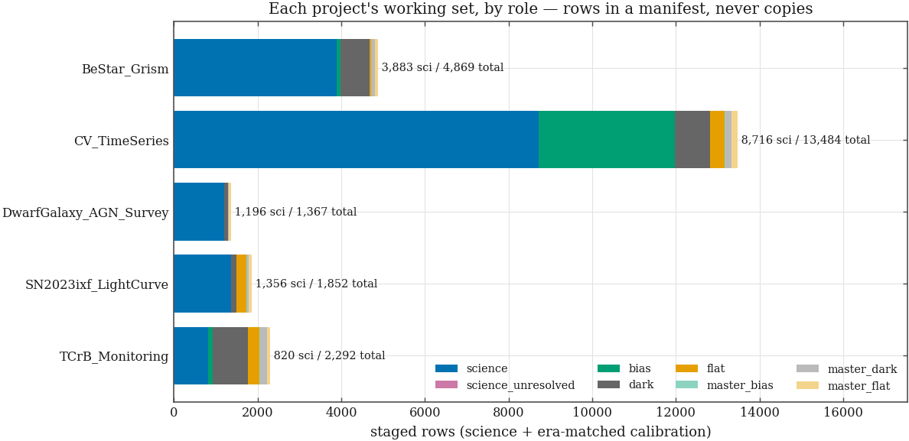
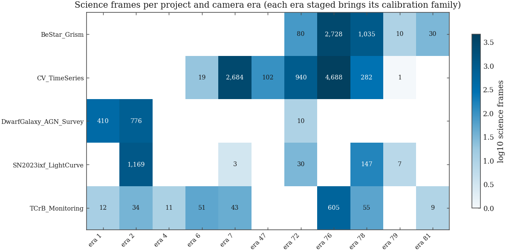

5 projects staged · 15,971 science rows
· 3 cone candidates
· 7,890 calibration rows · zero frames copied
· built 2026-08-19T01:05Z
(S0c v1.0 (2026-08-18),
commit d97c6d8-dirty)
· back to the evidence hub
Each project needs a working set: its science frames plus
the calibration frames that go with them. Should S0c copy those
files into per-project data/ directories?
The archive already answered. Of 330,865 catalog rows, only 198,294 are canonical frames — 132,571 rows (40%) are duplicate copies of frames that already existed elsewhere: wholesale re-copied night directories, consortium mirrors, renamed reduced-tree files. 124,235 exposures exist in more than one place; the worst multiplicities:
| copies of one exposure | duplicate groups |
|---|---|
| 6 | 92 |
| 5 | 321 |
| 4 | 1,879 |
| 3 | 3,247 |
| 2 | 118,696 |
Every one of those copies was made by someone who, quite reasonably, wanted a local working set. S0 spent an entire pipeline stage undoing the consequences.
The archive stays read-only and single-copy; a re-run of S0 → S0b → S0c after each archive sync refreshes every working set in place. size_bytes is an integrity SURROGATE, not a checksum: it comes from the S0 catalog scan and catches truncation/replacement at read time. A content hash would require re-reading the full 3.3 TiB archive — that is a separate archive-custody decision, not part of a staging build.
What exactly does each project's staging manifest claim — and where is the claim written down so a reviewer can diff it?

| project | science | cone candidates | targets | nights | span | eras | calib rows | working artifact |
|---|---|---|---|---|---|---|---|---|
| BeStar_Grism | 3,883 | 3 | 11 | 167 | 2024-05-19 → 2026-07-02 | 5 | 983 | BeStar_Grism/data/stage_manifest.csv |
| CV_TimeSeries | 8,716 | 0 | 5 | 108 | 2024-01-26 → 2026-06-02 | 7 | 4,768 | CV_TimeSeries/data/stage_manifest.csv |
| DwarfGalaxy_AGN_Survey | 1,196 | 0 | 21 | 54 | 2023-02-23 → 2024-06-04 | 3 | 171 | DwarfGalaxy_AGN_Survey/data/stage_manifest.csv |
| SN2023ixf_LightCurve | 1,356 | 0 | 2 | 42 | 2023-05-04 → 2026-04-01 | 5 | 496 | SN2023ixf_LightCurve/data/stage_manifest.csv |
| TCrB_Monitoring | 820 | 0 | 2 | 112 | 2023-05-09 → 2026-06-30 | 8 | 1,472 | TCrB_Monitoring/data/stage_manifest.csv |
Each selection rule, verbatim from the data table the build reads (a change to any list or filter set is a one-line reviewable diff):
| project | science selection rule (encoded as data in macro_core.staging.PROJECT_SELECTIONS) | source |
|---|---|---|
| BeStar_Grism | Canonical error-free Light frames of the core-ten targets plus Vega (Alpha Lyr synonym-merged, era-A ladder included) in the grism filter whitelist hrg/lrg/HaGrism/OGGrism; 'lrgblue' and direct-imaging filters excluded by the whitelist. T CrB is deliberately absent ('not this paper'). Name-less grism frames within 0.25° of a staged target also enter the working set, as role='science_unresolved' rows Step 0 must adjudicate before any of them counts as science. | BeStar_Grism/ANALYSIS_STRATEGY.md §3.2 inventory table + Step 0 filter whitelist and its blank-target_best cone match; STRATEGY_CLAIMS BeStar rows. |
| CV_TimeSeries | Canonical error-free Light frames of the five CVs in photometric filters only (ALL FIVE grism spellings — hrg, lrg, HaGrism, OGGrism, HaG — plus 'empty', 'W', '6' excluded) — the strategy's canonical accounting rule, widened from rawimage-only to all canonical trees so the iKon-tree VV Pup/YZ Cnc/ST LMi frames stage too; the widening imported the iKon tree's filter vocabulary, which is why the exclusion set is derived from GRISM_ALL. | CV_TimeSeries/ANALYSIS_STRATEGY.md §3 canonical rule + §3.1 per-target table; STRATEGY_CLAIMS CV rows. |
| DwarfGalaxy_AGN_Survey | Canonical error-free Light frames of NGC 5548 (slot-'6' campaign + the 2024-06-05 revisit), NGC 5238, and the 19 verified Dw survey fields, all filters. The mispointed 2023-03-25 NGC 5548 night stays IN the manifest — its pointing flag, not its absence, is the record (S0 derives NGC 5548's reference position from header coordinates because none of its 279 frames is plate-solved, so the ~8° offset flags as pointing_gt1deg like any other). | DwarfGalaxy_AGN_Survey/ANALYSIS_STRATEGY.md §3 (19 fields verified; NGC 5548 143-frame call); STRATEGY_CLAIMS Dwarf rows (__dw_survey__ sentinel expanded to DW_FIELDS). |
| SN2023ixf_LightCurve | Canonical error-free Light frames labeled 2023ixf, plus ALL canonical M101/NGC5457/'Pinwheel Galaxy' field frames — the saturated first epochs (2023-05-20/21), the pre-explosion template (2023-05-05) and every post-fade template epoch carry the host's name, not the SN's, and two of them carry a sequence digit fused to the SN's name ('2023ixf1/2'). | SN2023ixf_LightCurve/ANALYSIS_STRATEGY.md §3.1 (campaign start resolution) + §3.4 (templates); STRATEGY_CLAIMS 2023ixf row. ngc5457, 'pinwheel galaxy', 2023ixf1 and 2023ixf2 are cone-gated S0 synonyms (SYNONYM_TABLE). |
| TCrB_Monitoring | Canonical error-free Light frames of T CrB and the θ CrB calibrator in every filter EXCEPT 'H' — the 2025 grism series, the 2023–2024 imaging anchors, and the calibrator series are one working set; the six single-epoch 2024-03-13 'H' frames are excluded from science by §3's explicit ruling (they remain visible in S0's frames table, which is where the filter-forensics table is built). | TCrB_Monitoring/ANALYSIS_STRATEGY.md §3 (T CrB 471 unique rawimage light frames — 402 after global dedup — + θ CrB 412-frame grism calibrator series; 'H' excluded from science regardless of P0-2 mapping); STRATEGY_CLAIMS tcrb/tetcrb rows. |

PROJECT_SELECTIONS, DW_FIELDS,
filter whitelists/blacklists) and unit-tested against
STRATEGY_CLAIMS — every target a strategy document claims
is staged by exactly one project's rule, and the reduced tree, duplicate
copies, and header-error frames never stage. QC flags and pointing
offsets travel WITH the rows: staging marks, it never drops.A stage that wants "the project's frames" reads one CSV (or
one stage_* table) and never re-derives target matching,
dedup, or tree policy. The mispointed NGC 5548 night, the saturated
SN 2023ixf first epochs, and the 21 off-pointing T CrB grism
frames are all IN their manifests, flagged — each stage applies its own
disqualification rules with the evidence in hand.
Which calibration frames belong in a project's working set, and on what evidence is each one attached?
7,890 calibration rows across the five
manifests. The rule is deliberately coarse: for every camera era a
project's science touches, ALL of that era's frames from the S0b census
are staged — raw bias/dark/flat and the recovered master products alike —
each row stamped match_basis = 'era_exact'
(masters distinguished by their master_* role, never by a
different basis).
| project | bias (raw) | dark (raw) | flat (raw) | master products |
|---|---|---|---|---|
| BeStar_Grism | 98 | 683 | 43 | 159 |
| CV_TimeSeries | 3,256 | 843 | 355 | 314 |
| DwarfGalaxy_AGN_Survey | 0 | 90 | 0 | 81 |
| SN2023ixf_LightCurve | 0 | 145 | 238 | 113 |
| TCrB_Monitoring | 98 | 848 | 281 | 245 |
Cross-check against the S0b recovery: the Mode0 grism era
(era 76) had zero mode-matched darks until the
Calibrations/ masters were recovered — any project staging
era-76 science must carry them:
| project with era-76 (Mode0) science | era-76 science rows | era-76 master products staged | check |
|---|---|---|---|
| BeStar_Grism | 2,728 | 123 | ok |
| CV_TimeSeries | 4,688 | 123 | ok |
| TCrB_Monitoring | 605 | 123 | ok |
A stage filters its manifest by role,
era_id, exptime, and filter and has
every candidate calibration frame in hand — including the masters whose
recovery is documented in the S0b report.
A manuscript quotes "30 frames/band", "20 frames", "403 frames / 40 nights". Where is the machinery that notices when a sentence in a strategy document stops matching the frames that actually exist?
Every inventory number the five strategy documents publish,
encoded in macro_core.staging.STAGE_CLAIMS next to the query
that reproduces it, measured here against the stage tables
(role = 'science' is imposed by the renderer, so no claim can
count calibration or cone-candidate rows):
| project | published inventory claim | doc frames | staged frames | Δ | doc nights | staged nights | Δ | source |
|---|---|---|---|---|---|---|---|---|
| CV_TimeSeries | ST LMi — rawimage photometric light frames | 3,150 | 3,150 | — | 39 | 39 | — | CV_TimeSeries/ANALYSIS_STRATEGY.md §3.1 |
| CV_TimeSeries | YZ Cnc — rawimage photometric light frames | 1,915 | 1,915 | — | 26 | 26 | — | CV_TimeSeries/ANALYSIS_STRATEGY.md §3.1 |
| CV_TimeSeries | VV Pup — rawimage photometric light frames | 1,277 | 1,277 | — | 28 | 28 | — | CV_TimeSeries/ANALYSIS_STRATEGY.md §3.1 |
| CV_TimeSeries | EU UMa — rawimage photometric light frames | 993 | 993 | — | 32 | 32 | — | CV_TimeSeries/ANALYSIS_STRATEGY.md §3.1 |
| CV_TimeSeries | AN UMa — rawimage photometric light frames | 1,279 | 1,279 | — | 14 | 14 | — | CV_TimeSeries/ANALYSIS_STRATEGY.md §3.1 |
| TCrB_Monitoring | T CrB grism series (the paper's spine) | 247 | 247 | — | 60 | 60 | — | TCrB_Monitoring/ANALYSIS_STRATEGY.md §1/§3 |
| TCrB_Monitoring | θ CrB grism calibrator series | 412 | 412 | — | 42 | 42 | — | TCrB_Monitoring/ANALYSIS_STRATEGY.md §3 |
| SN2023ixf_LightCurve | 2024-05-19 deep g template stack | 15 | 15 | — | 1 | 1 | — | SN2023ixf_LightCurve/ANALYSIS_STRATEGY.md §3.4 |
| SN2023ixf_LightCurve | 2024-05-19 deep r template stack | 15 | 15 | — | 1 | 1 | — | SN2023ixf_LightCurve/ANALYSIS_STRATEGY.md §3.4 |
| SN2023ixf_LightCurve | 2026-03-21/22 M101-field epoch ('pinwheel galaxy') | 140 | 140 | — | 2 | 2 | — | SN2023ixf_LightCurve/ANALYSIS_STRATEGY.md §3.4 (added 2026-08-18: the deep pre-2026-04 template epoch) |
| DwarfGalaxy_AGN_Survey | NGC 5548 slot-'6' campaign (2023) | 143 | 143 | — | 16 | 16 | — | DwarfGalaxy_AGN_Survey/ANALYSIS_STRATEGY.md §3 |
| DwarfGalaxy_AGN_Survey | NGC 5548 2024-06-05 grism revisit | 10 | 10 | — | 1 | 1 | — | DwarfGalaxy_AGN_Survey/ANALYSIS_STRATEGY.md §3 |
| BeStar_Grism | Spica | 728 | 728 | — | 29 | 29 | — | BeStar_Grism/ANALYSIS_STRATEGY.md §3.2 |
| BeStar_Grism | HR 3454 (η Hya) | 471 | 471 | — | 34 | 34 | — | BeStar_Grism/ANALYSIS_STRATEGY.md §3.2 |
| BeStar_Grism | HR 4963 (θ Vir) | 368 | 368 | — | 33 | 33 | — | BeStar_Grism/ANALYSIS_STRATEGY.md §3.2 |
| BeStar_Grism | Phecda | 333 | 333 | — | 40 | 40 | — | BeStar_Grism/ANALYSIS_STRATEGY.md §3.2 |
| BeStar_Grism | 53 Boo | 330 | 330 | — | 23 | 23 | — | BeStar_Grism/ANALYSIS_STRATEGY.md §3.2 |
| BeStar_Grism | 69 Ori | 288 | 288 | — | 51 | 51 | — | BeStar_Grism/ANALYSIS_STRATEGY.md §3.2 |
| BeStar_Grism | φ Leo | 261 | 261 | — | 39 | 39 | — | BeStar_Grism/ANALYSIS_STRATEGY.md §3.2 |
| BeStar_Grism | λ Eri | 252 | 252 | — | 47 | 47 | — | BeStar_Grism/ANALYSIS_STRATEGY.md §3.2 |
| BeStar_Grism | 5 Cnc | 194 | 194 | — | 45 | 45 | — | BeStar_Grism/ANALYSIS_STRATEGY.md §3.2 |
| BeStar_Grism | HD 70340 | 181 | 181 | — | 30 | 30 | — | BeStar_Grism/ANALYSIS_STRATEGY.md §3.2 |
| BeStar_Grism | Vega — era-A exposure ladder (2024-05-20) | 80 | 80 | — | 1 | 1 | — | BeStar_Grism/ANALYSIS_STRATEGY.md §3.2 |
| BeStar_Grism | Vega — era-C standard series | 367 | 367 | — | 18 | 18 | — | BeStar_Grism/ANALYSIS_STRATEGY.md §3.2 |
| BeStar_Grism | Vega — 2026 blank-readout tier (post-doc ingest) | 30 | 30 | — | 3 | 3 | — | BeStar_Grism/ANALYSIS_STRATEGY.md §3.2 (added 2026-08-18: nights the doc's table pre-dates; era 83 -> 81 after the S0e geometry repair) |
Drift now surfaces here in two directions: a document mis-stating the archive, and an archive that grew past a document. The second is the common case and the benign one — it is how the θ CrB series gained 9 frames and Vega gained a whole instrument tier — but a referee cannot tell the two apart from prose alone, and neither could we.
When a stage opens a frame through a staging manifest, what chain of evidence connects that row back to a file in the immutable archive — and where can each link be audited?
| link | artifact | population | custody rule |
|---|---|---|---|
| 1 | rlmt-archive/ (3.3 TiB) | 330,865 cataloged files | immutable — read-only to every stage, forever |
| 2 | S0 manifest frames | 330,865 rows → 198,294 canonical | global dedup, eras, aliases, QC — the provenance layer |
| 3 | S0b calib_frames | 4,976 calibration frames incl. recovered masters | kind-normalized census, era-keyed |
| 4 | S0c stage_<project> tables | 23,864 rows across 5 projects | selection rules as data; atomic swap per build |
| 5 | <Project>/data/stage_manifest.csv | one CSV per project (same rows as link 4) | the working artifact — gitignored, regenerable, never a copy of pixels |
This build's outputs (build id
S0c v1.0 (2026-08-18) @ 2026-08-19T01:05Z, commit
d97c6d8-dirty,
staging.py sha256
9b816f4cf384):
| project | DB table | science | cone | calib | rows | CSV (gitignored, regenerable) | farm links |
|---|---|---|---|---|---|---|---|
| BeStar_Grism | stage_bestar_grism | 3,883 | 3 | 983 | 4,869 | BeStar_Grism/data/stage_manifest.csv | — |
| CV_TimeSeries | stage_cv_timeseries | 8,716 | 0 | 4,768 | 13,484 | CV_TimeSeries/data/stage_manifest.csv | — |
| DwarfGalaxy_AGN_Survey | stage_dwarfgalaxy_agn_survey | 1,196 | 0 | 171 | 1,367 | DwarfGalaxy_AGN_Survey/data/stage_manifest.csv | — |
| SN2023ixf_LightCurve | stage_sn2023ixf_lightcurve | 1,356 | 0 | 496 | 1,852 | SN2023ixf_LightCurve/data/stage_manifest.csv | — |
| TCrB_Monitoring | stage_tcrb_monitoring | 820 | 0 | 1,472 | 2,292 | TCrB_Monitoring/data/stage_manifest.csv | — |
The commit field carries a -dirty suffix when the
build ran from a modified working tree, and the staging.py
digest identifies the exact selection-rule text that emitted these rows. The
first S0c build recorded a bare hash of the commit before the one
that introduced staging.py; a provenance field that cannot
recover the code that ran is not provenance.
obs_rowid joins back to the catalog scan and the manifest,
dup_group/era_id/qc_flags carry the
S0 rulings, match_basis says why the row exists,
size_bytes is the read-time integrity tripwire, and
stage_build_id pins which build emitted it. The CSV and the
DB table are the same rows in the same order — two views of one build,
regenerated together, never edited by hand.The October ingest path gains its third link: after each
archive sync, re-run S0 → S0b → S0c and every project's working
set follows the archive — no copies to chase, no hand lists to update.
Regenerate any time with
pipeline/scripts/build_s0c_staging.py.
{kind=link}
{kind=link}